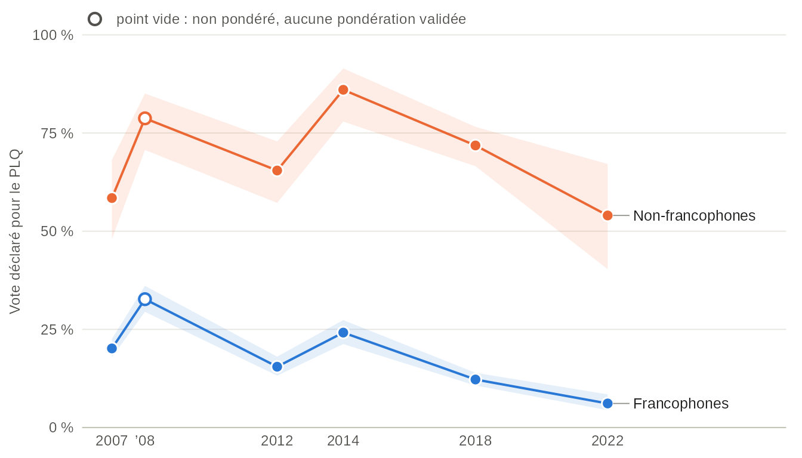
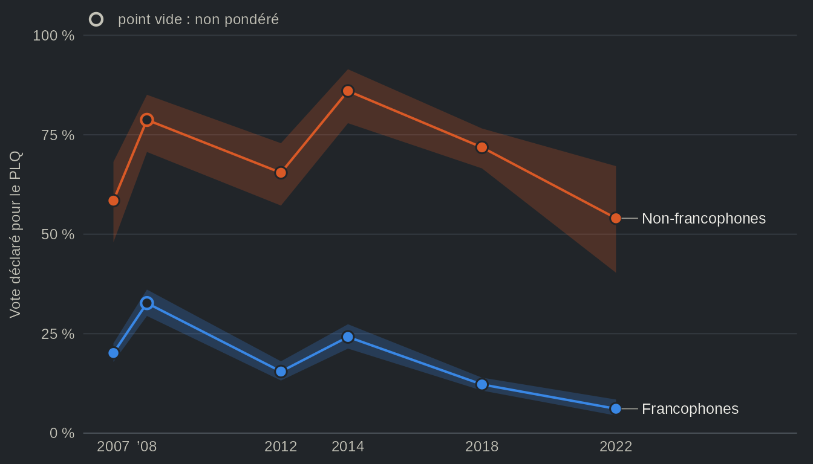
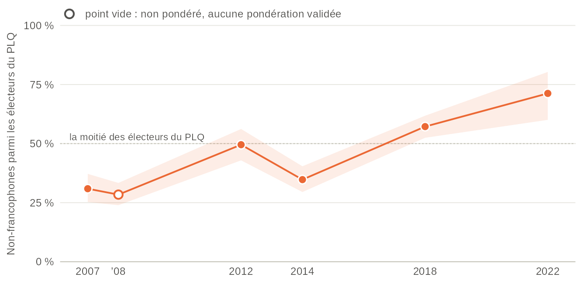
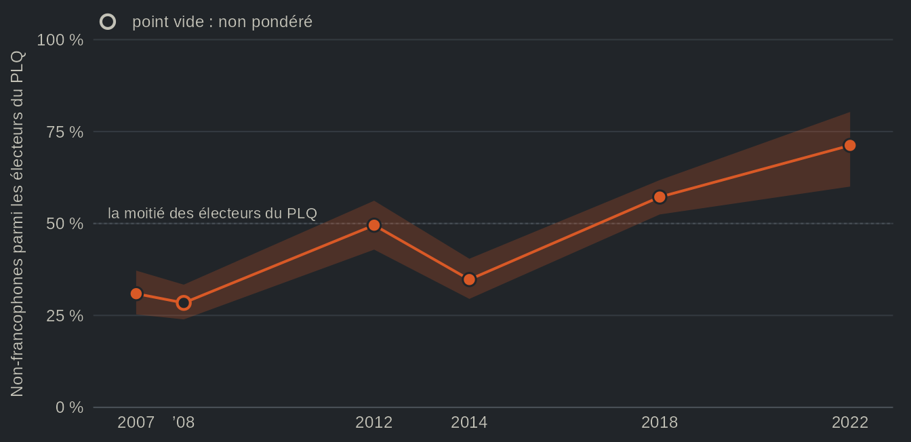
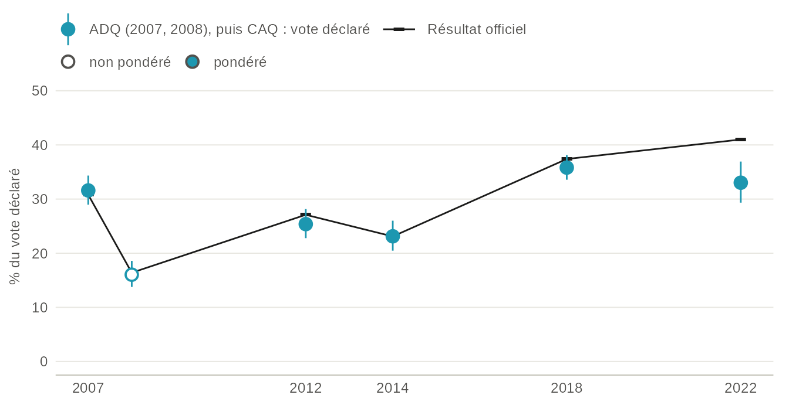
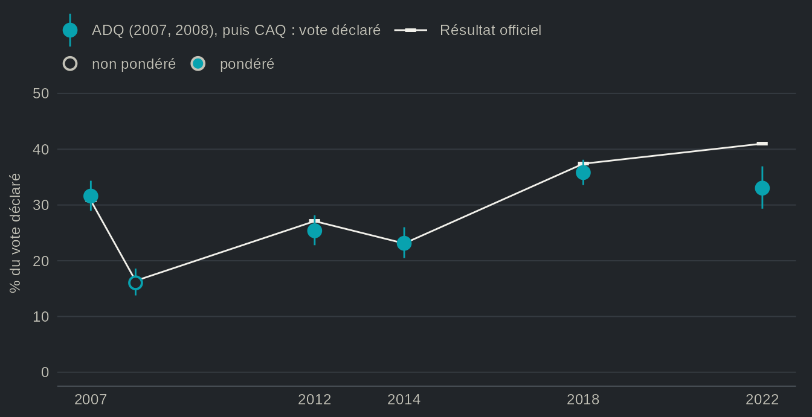

Recettes : le clivage linguistique du vote libéral, pas à pas
Source:vignettes/articles/fr-recettes.Rmd
fr-recettes.RmdDepuis les premières études électorales provinciales, le vote québécois se lit à travers deux clivages, la langue et la question nationale (Hamilton et Pinard, 1976 ; Pinard et Hamilton, 1978 ; Bélanger et al., 2018). Le Parti libéral du Québec (PLQ) obtient la majorité du vote anglophone et allophone, et ce sont ses appuis chez les francophones qui décident des élections. Selon une lecture répandue, ce clivage linguistique ne serait que la question nationale sous un autre nom : les non-francophones voteraient libéral parce qu’ils sont fédéralistes. Si cette lecture est juste, l’écart aurait dû se resserrer après 2012, à mesure que la Coalition avenir Québec (CAQ), un parti nationaliste qui met l’indépendance de côté, courtisait les francophones fédéralistes et que la souveraineté perdait, disait-on, du terrain. Ce recul est lui-même moins net qu’il n’y paraît : aux élections fédérales, le poids de l’appui à l’indépendance dans le vote est resté remarquablement stable de 2006 à 2021 (Daoust et Gareau-Paquette, 2024).
Dans l’ensemble, les Études électorales québécoises n’appuient que partiellement cette lecture. L’écart du vote libéral entre non-francophones et francophones est d’environ 38 points de pourcentage en 2007 et de 50 points en 2012 ; il se creuse en 2014 et en 2018, et il atteint encore 48 points en 2022. L’appui à l’indépendance en explique une partie, mais une partie seulement : dans les quatre études de 2012 à 2022, à opinion égale sur l’indépendance, l’écart passe de 54 à 42 points. Ce qui a changé, c’est l’électorat libéral lui-même. Les francophones l’ont quitté (20 % d’entre eux votaient pour le PLQ en 2007, contre 6 % en 2022), si bien que les non-francophones, qui formaient 31 % des électeurs libéraux, en forment désormais 71 % (58 % si leur part des électeurs de chaque échantillon était restée celle de 2007).
Les recettes qui suivent construisent cette réponse pas à pas ; chacune s’exécute telle quelle.
1. Une variable de choix de vote pour toutes les études
vote_choice réunit trois questions dans une seule
colonne : le vote déclaré après l’élection, l’intention de vote avec
relance des indécis et l’intention simple.
vote_choice__type indique à quelle question répond chaque
ligne.
studies <- c("qes1998", "qes2007", "qes2007_panel", "qes2008", "qes_crop_2007_2010",
"qes2012", "qes2012_panel", "qes2014", "qes2018", "qes2018_panel", "qes2022")
h <- qes_harmonize(studies = studies, targets = c("vote_choice", "lang_mother"),
layout = "long", quiet = TRUE)
table(h$study, h$vote_choice__type)
#>
#> recall intention_push intention
#> qes_crop_2007_2010 0 22848 1179
#> qes1998 1483 1483 0
#> qes2007 2175 0 0
#> qes2007_panel 2054 1997 53
#> qes2008 1151 0 0
#> qes2012 1505 0 0
#> qes2012_panel 844 844 0
#> qes2014 1517 0 0
#> qes2018 3072 0 0
#> qes2018_panel 842 1250 0
#> qes2022 1220 1521 0Dans ce format long, une étude qui compte une vague avant et une vague après l’élection a une ligne par vague : le même répondant y figure une fois avec son intention et une fois avec son vote déclaré. Les sondages CROP, menés entre les élections, ne comportent que des intentions.
2. Ne garder que le vote déclaré
Opposer l’intention mesurée dans une étude au vote déclaré dans une
autre reviendrait à comparer deux questions différentes. Pour le clivage
linguistique, nous retenons donc le vote déclaré, que toutes les Études
électorales québécoises ont mesuré après l’élection, et nous lisons
chaque étude dans le format par défaut (une ligne par répondant).
L’argument types ne retient que certaines des questions que
regroupe la variable :
r <- qes_harmonize(studies = studies, targets = c("vote_choice", "lang_mother", "sov_support"),
types = list(vote_choice = "recall"), quiet = TRUE)
table(r$study, r$vote_choice__type, useNA = "ifany")
#>
#> recall intention_push intention <NA>
#> qes_crop_2007_2010 0 0 0 24027
#> qes1998 1483 0 0 0
#> qes2007 2175 0 0 0
#> qes2007_panel 2054 0 0 388
#> qes2008 1151 0 0 0
#> qes2012 1505 0 0 0
#> qes2012_panel 844 0 0 0
#> qes2014 1517 0 0 0
#> qes2018 3072 0 0 0
#> qes2018_panel 842 0 0 408
#> qes2022 1220 0 0 301La variable vote_choice est désormais manquante pour les
sondages CROP, ainsi que pour les répondants qui n’ont pas été joints
après le scrutin. Lorsqu’une étude a posé plusieurs de ces questions et
qu’aucun type n’est précisé, le vote déclaré passe en premier, puis
l’intention avec relance, puis l’intention simple
(qes_spec("pooled") donne cet ordre).
3. D’où vient chaque valeur
prov <- qes_provenance(r, level = "pooled")
prov[prov$pooled == "vote_choice", c("study", "type", "wave", "grade", "n_value")]
#> study type wave grade n_value
#> 1 qes1998 recall post comparable 1126
#> 7 qes2007 recall post comparable 1727
#> 13 qes2007_panel recall post approximate 1494
#> 19 qes2008 recall post comparable 898
#> 25 qes_crop_2007_2010 recall <NA> <NA> 0
#> 31 qes2012 recall post identical 1274
#> 37 qes2012_panel recall post approximate 633
#> 43 qes2014 recall post comparable 1283
#> 49 qes2018 recall post comparable 2016
#> 55 qes2018_panel recall post comparable 704
#> 61 qes2022 recall pes comparable 1101La question de chaque étude reçoit un niveau de comparabilité. Ce
niveau est identical lorsque la question, les choix de
réponse et le format sont les mêmes, comparable lorsque les
différences (l’ordre des choix, la présence ou non d’une option « ne
sait pas ») ne devraient pas déplacer les parts, et
approximate lorsqu’un format ou un filtre risque de les
déplacer. Seules les questions du panel de 2007 et du panel de 2012 sont
ici de niveau approximate. Les figures qui suivent laissent
donc les panels de côté et ne retiennent qu’une Étude électorale
québécoise par élection.
4. Une part pondérée et son intervalle de confiance, dans une étude
d <- qes_design(r[r$study == "qes2018", ], weight = "weight_post")
d <- subset(d, !is.na(vote_choice))
caq18 <- svyciprop(~I(vote_choice == "CAQ"), d, method = "logit")
caq18
#> 2.5% 97.5%
#> I(vote_choice == "CAQ") 0.358 0.336 0.381La CAQ a obtenu 37,4 % des votes valides en 2018, et 35,8 % des répondants de l’étude de 2018 déclarent avoir voté pour elle (intervalle de confiance à 95 % : de 33,6 à 38,1). Le résultat officiel se situe donc à l’intérieur de cet intervalle.
5. Par groupe
plq18 <- svyby(~I(vote_choice == "PLQ"), ~lang_mother, subset(d, !is.na(lang_mother)),
svyciprop, method = "logit", vartype = "ci")
plq18
#> lang_mother I(vote_choice == "PLQ") ci_l ci_u
#> French French 0.1223020 0.1070069 0.1394418
#> English English 0.7418131 0.6814276 0.7942093
#> Other Other 0.6416905 0.5267904 0.7423376En 2018, 74 % des anglophones et 64 % des allophones ont voté libéral, contre 12 % des francophones. L’estimation chez les allophones repose sur 84 répondants, d’où son intervalle plus large. Les recettes suivantes réunissent donc anglophones et allophones sous l’étiquette de non-francophones : pris seuls, les échantillons d’allophones sont trop petits pour être suivis d’une élection à l’autre.
6. Chaque étude, une à la fois
Les études diffèrent par leur population, leur mode d’enquête, leurs libellés et leur pondération ; chaque estimation est donc faite à l’intérieur d’une étude, avant toute comparaison. L’étude de 1998 ne mesure pas la langue maternelle : la série commence donc en 2007. La pondération de l’étude de 2008 est encore en révision : ses estimations ne sont pas pondérées, et les figures les représentent par un point vide.
qes <- c("qes2007", "qes2008", "qes2012", "qes2014", "qes2018", "qes2022")
r$francophone <- factor(ifelse(r$lang_mother == "French", "francophone", "other"))
# one design per study; a study without a post-election weight (2008) gets
# a unit weight, so its estimates are unweighted
is_weighted <- function(s, data = r) !all(is.na(data$weight_post[data$study == s]))
study_design <- function(s, data = r) {
x <- data[data$study == s, ]
if (!is_weighted(s, data)) x$weight_post <- 1
qes_design(x, weight = "weight_post")
}
plq <- do.call(rbind, lapply(qes, function(s) {
ds <- subset(study_design(s), !is.na(vote_choice) & !is.na(francophone))
est <- svyby(~I(vote_choice == "PLQ"), ~francophone, ds, svyciprop, method = "logit", vartype = "ci")
data.frame(study = s, year = as.integer(substr(ds$variables$year[1], 1, 4)),
weighted = is_weighted(s), group = est$francophone,
pct = 100 * est[[2]], lo = 100 * est$ci_l, hi = 100 * est$ci_u)
}))
print(plq, digits = 3, row.names = FALSE)
#> study year weighted group pct lo hi
#> qes2007 2007 TRUE francophone 20.14 17.91 22.59
#> qes2007 2007 TRUE other 58.44 47.99 68.18
#> qes2008 2008 FALSE francophone 32.68 29.46 36.08
#> qes2008 2008 FALSE other 78.74 70.68 85.05
#> qes2012 2012 TRUE francophone 15.49 13.23 18.05
#> qes2012 2012 TRUE other 65.46 57.20 72.87
#> qes2014 2014 TRUE francophone 24.18 21.25 27.37
#> qes2014 2014 TRUE other 86.01 77.91 91.47
#> qes2018 2018 TRUE francophone 12.23 10.70 13.94
#> qes2018 2018 TRUE other 71.83 66.55 76.58
#> qes2022 2022 TRUE francophone 6.13 4.42 8.44
#> qes2022 2022 TRUE other 54.01 40.32 67.11

Source : qesR, variables regroupées vote_choice (vote déclaré) et lang_mother ; les non-francophones sont les répondants de langue maternelle anglaise ou autre. Pondéré avec la pondération postélectorale de chaque étude ; point vide (2008) : non pondéré.
Vue en tableau
| Élection | Étude | Francophones, % PLQ [IC à 95 %] | Non-francophones, % PLQ [IC à 95 %] | Écart [IC à 95 %] | n, francophones | n, non-francophones | Pondération |
|---|---|---|---|---|---|---|---|
| 2007 | EEQ 2007 | 20,1 [17,9 ; 22,6] | 58,4 [48,0 ; 68,2] | +38,3 pts [27,9 ; 48,7] | 1525 | 163 | pondéré |
| 2008 | EEQ 2008 | 32,7 [29,5 ; 36,1] | 78,7 [70,7 ; 85,1] | +46,1 pts [38,2 ; 53,9] | 771 | 127 | non pondéré |
| 2012 | EEQ 2012 | 15,5 [13,2 ; 18,1] | 65,5 [57,2 ; 72,9] | +50,0 pts [41,8 ; 58,2] | 1094 | 180 | pondéré |
| 2014 | EEQ 2014 | 24,2 [21,3 ; 27,4] | 86,0 [77,9 ; 91,5] | +61,8 pts [54,5 ; 69,1] | 981 | 201 | pondéré |
| 2018 | EEQ 2018 | 12,2 [10,7 ; 13,9] | 71,8 [66,5 ; 76,6] | +59,6 pts [54,3 ; 64,9] | 1656 | 359 | pondéré |
| 2022 | EEQ 2022 | 6,1 [4,4 ; 8,4] | 54,0 [40,3 ; 67,1] | +47,9 pts [34,1 ; 61,6] | 883 | 121 | pondéré |
Deux constats s’imposent. Premièrement, le clivage est important à chaque élection, de 38 points en 2007 à 62 points en 2014, et il ne s’est pas nettement resserré après 2012. Par rapport à 2012 (environ 50 points), l’écart s’est creusé en 2014 et en 2018, puis est revenu à environ 48 points en 2022, une estimation dont l’intervalle (de 34 à 62) inclut l’écart de 2012. Deuxièmement, les deux groupes n’ont pas évolué au même rythme. Chez les francophones, le vote libéral recule de 20 % en 2007 à 6 % en 2022. Chez les non-francophones, il oscille entre 54 % et 86 % sans tendance claire, et il se situe en 2022 environ 4 points sous son niveau de 2007. L’écart plus étroit de 2022 vient du côté des non-francophones : de 2018 à 2022, le vote libéral a reculé de 18 points chez eux, contre 6 chez les francophones. L’estimation de 2022 chez les non-francophones ne repose toutefois que sur 121 répondants, le plus petit échantillon de la série (le plus grand en compte 359), et son intervalle est large. C’est aussi pourquoi la page ne divise pas les non-francophones entre anglophones et allophones.
7. Qui vote libéral
Les mêmes données se lisent aussi dans l’autre sens : non plus la part de chaque groupe qui vote libéral, mais la part des électeurs libéraux qui appartiennent à chaque groupe. Vue sous cet angle, la transformation est nette.
comp <- do.call(rbind, lapply(qes, function(s) {
ds <- subset(study_design(s), vote_choice %in% "PLQ" & !is.na(francophone))
est <- svyciprop(~I(francophone == "other"), ds, method = "logit")
data.frame(study = s, year = plq$year[plq$study == s][1], weighted = is_weighted(s),
pct = 100 * as.numeric(est), lo = 100 * attr(est, "ci")[[1]], hi = 100 * attr(est, "ci")[[2]])
}))
print(comp, digits = 3, row.names = FALSE)
#> study year weighted pct lo hi
#> qes2007 2007 TRUE 30.9 25.3 37.2
#> qes2008 2008 FALSE 28.4 23.9 33.4
#> qes2012 2012 TRUE 49.5 42.9 56.2
#> qes2014 2014 TRUE 34.8 29.5 40.4
#> qes2018 2018 TRUE 57.2 52.5 61.8
#> qes2022 2022 TRUE 71.2 60.0 80.3

Source : qesR, variables regroupées vote_choice (vote déclaré) et lang_mother. Pondéré avec la pondération postélectorale de chaque étude ; point vide (2008) : non pondéré.
Vue en tableau
| Élection | Étude | Non-francophones parmi les électeurs du PLQ, % [IC à 95 %] | n, électeurs du PLQ | Non-francophones parmi tous les électeurs, % | Non-francophones parmi les électeurs du PLQ, à leur part de 2007 parmi tous les électeurs, % | Pondération |
|---|---|---|---|---|---|---|
| 2007 | EEQ 2007 | 30,9 [25,3 ; 37,2] | 424 | 13,4 | 30,9 | pondéré |
| 2008 | EEQ 2008 | 28,4 [23,9 ; 33,4] | 352 | 14,1 | 27,1 | non pondéré |
| 2012 | EEQ 2012 | 49,5 [42,9 ; 56,2] | 278 | 18,8 | 39,5 | pondéré |
| 2014 | EEQ 2014 | 34,8 [29,5 ; 40,4] | 417 | 13,0 | 35,4 | pondéré |
| 2018 | EEQ 2018 | 57,2 [52,5 ; 61,8] | 490 | 18,5 | 47,5 | pondéré |
| 2022 | EEQ 2022 | 71,2 [60,0 ; 80,3] | 114 | 21,9 | 57,6 | pondéré |
Les non-francophones forment 31 % des électeurs du PLQ en 2007 et 71 % en 2022. Le tracé n’est pas régulier, et chaque point repose tout au plus sur quelques centaines d’électeurs libéraux. Cette part dépend en outre d’autre chose que du vote libéral de chaque groupe : la part pondérée des non-francophones parmi les électeurs de chaque étude, qui varie davantage que ne le ferait la population. Elle est d’environ 13 % en 2007 et en 2014, et de 19 % à 22 % en 2012, en 2018 et en 2022 ; la baisse de 2014 coïncide d’ailleurs avec la faible part de cette année-là. Si cette part était restée à son niveau de 2007, les non-francophones formeraient encore 58 % des électeurs libéraux en 2022. La hausse tient donc, mais son ampleur dépend de la composition de chaque échantillon. Autrement dit, le PLQ est passé d’un parti dont l’électorat était majoritairement francophone à un parti dont l’électorat ne l’est plus, sans que les non-francophones s’y rallient en plus grand nombre. Ce sont les francophones qui sont partis.
8. La souveraineté : une variable, plusieurs libellés
sov_support regroupe les questions référendaires. Le
libellé a changé au fil du temps, et la colonne regroupée le consigne
dans sov_support__type : les parts ne se comparent qu’à
l’intérieur d’un même libellé.
table(r$study, r$sov_support__type)
#>
#> independence sovereign_country partnership_1995_push
#> qes_crop_2007_2010 0 0 0
#> qes1998 0 0 1483
#> qes2007 0 0 2175
#> qes2007_panel 0 0 2050
#> qes2008 0 0 1151
#> qes2012 1505 0 0
#> qes2012_panel 0 844 0
#> qes2014 1517 0 0
#> qes2018 3072 0 0
#> qes2018_panel 0 0 0
#> qes2022 1521 0 0
#>
#> partnership_1995 favour
#> qes_crop_2007_2010 0 0
#> qes1998 0 0
#> qes2007 0 0
#> qes2007_panel 0 0
#> qes2008 0 0
#> qes2012 0 0
#> qes2012_panel 0 0
#> qes2014 0 0
#> qes2018 0 0
#> qes2018_panel 0 842
#> qes2022 0 0Les quatre Études électorales québécoises de 2012 à 2022 ont posé la même question sur l’indépendance, que la recette suivante utilise. Les études antérieures posaient la question de souveraineté-partenariat du référendum de 1995, et les panels de 2012 et de 2018 ont employé leurs propres libellés.
9. Regrouper les études dans un modèle
Regrouper des études n’a de sens que dans un modèle qui les garde
distinctes, avec des effets fixes d’étude, de sorte que chaque
association soit estimée à l’intérieur des études.
pool = "equal" donne à chaque étude le même poids total
parmi les lignes qu’on lui fournit ; nous sélectionnons donc d’abord les
lignes du modèle. Par défaut, une étude compte en proportion de son
nombre de répondants. Nous employons un modèle de probabilité linéaire :
un coefficient multiplié par 100 se lit donc en points de pourcentage.
Le premier modèle ne comporte que les effets fixes d’étude ; le deuxième
ajoute l’appui à l’indépendance ; le troisième permet à l’écart
linguistique de varier d’une étude à l’autre.
four <- c("qes2012", "qes2014", "qes2018", "qes2022")
x <- r[r$study %in% four & !is.na(r$vote_choice) & !is.na(r$francophone) & !is.na(r$sov_support), ]
dp <- qes_design(x, weight = "weight_post", pool = "equal")
m1 <- svyglm(I(vote_choice == "PLQ") ~ francophone + study, dp)
m2 <- svyglm(I(vote_choice == "PLQ") ~ francophone + I(sov_support == "Yes") + study, dp)
m3 <- svyglm(I(vote_choice == "PLQ") ~ francophone * study + I(sov_support == "Yes"), dp)
100 * rbind(study_effects = coef(m1)[2], plus_independence = coef(m2)[2])
#> francophoneother
#> study_effects 54.07327
#> plus_independence 42.37054
regTermTest(m3, ~ francophone:study)
#> Wald test for francophone:study
#> in svyglm(formula = I(vote_choice == "PLQ") ~ francophone * study +
#> I(sov_support == "Yes"), design = dp)
#> F = 2.150366 on 3 and 4851 df: p= 0.091757Sur l’ensemble des quatre élections, et avec les seuls effets fixes d’étude, la probabilité de voter libéral est d’environ 54 points plus élevée chez les non-francophones que chez les francophones (intervalle de confiance à 95 % : de 49 à 59). À opinion égale sur l’indépendance, l’écart est encore de 42 points. L’appui à l’indépendance explique donc environ 12 des 54 points du clivage linguistique du vote libéral. Autrement dit, l’essentiel de ce clivage n’est pas la question nationale sous un autre nom, du moins telle que la mesure une seule question sur l’indépendance. Enfin, les indices d’une évolution de l’écart entre 2012 et 2022 sont faibles (un test d’égalité des écarts dans les quatre études donne p = 0,09).
10. L’ADQ et la CAQ en une seule série, face au décompte des votes
Les colonnes harmonisées gardent distinctes l’Action démocratique du
Québec (ADQ) et la CAQ. qes_party_lineage() ajoute une
colonne qui les réunit, pour les séries chronologiques ; ses lignes
recueillies avant la fusion de 2012 ont le niveau
approximate.
l <- qes_party_lineage(r, cols = "vote_choice")
table(l$study, l$vote_choice_lineage)[, c("PLQ", "PQ", "ADQ/CAQ", "QS")]
#>
#> PLQ PQ ADQ/CAQ QS
#> qes_crop_2007_2010 0 0 0 0
#> qes1998 384 517 204 0
#> qes2007 439 521 583 75
#> qes2007_panel 428 460 480 57
#> qes2008 352 336 144 38
#> qes2012 278 509 324 96
#> qes2012_panel 167 243 151 45
#> qes2014 489 344 277 131
#> qes2018 490 392 700 342
#> qes2018_panel 200 108 263 87
#> qes2022 146 206 364 209Pondérée à l’intérieur de chaque étude et mise en regard du résultat
officiel, cette colonne offre une première vérification du vote déclaré.
p est un graphique ggplot2 simple, prêt à adapter
(l’afficher avec p).
lineage <- do.call(rbind, lapply(qes, function(s) {
ds <- subset(study_design(s, l), !is.na(vote_choice_lineage))
est <- svyciprop(~I(vote_choice_lineage == "ADQ/CAQ"), ds, method = "logit")
ci <- attr(est, "ci")
data.frame(study = s, year = plq$year[plq$study == s][1], weighted = is_weighted(s, l),
pct = 100 * as.numeric(est), lo = 100 * ci[[1]], hi = 100 * ci[[2]])
}))
# the official share of valid votes of the ADQ (2007, 2008) and of the CAQ
# (2012 on), from Élections Québec
official <- data.frame(year = c(2007, 2008, 2012, 2014, 2018, 2022),
pct = c(30.8, 16.4, 27.1, 23.1, 37.4, 41.0))
fr <- identical(params$lang, "fr")
lab_series <- if (fr) c(lineage = "ADQ (2007, 2008), puis CAQ : vote déclaré", official = "Résultat officiel") else
c(lineage = "ADQ (2007, 2008), then CAQ: reported vote", official = "Official result")
lab_weight <- if (fr) c(`TRUE` = "pondéré", `FALSE` = "non pondéré") else
c(`TRUE` = "weighted", `FALSE` = "unweighted")
p <- ggplot(lineage, aes(year, pct)) +
geom_line(data = official, aes(colour = "official")) +
geom_point(data = official, aes(colour = "official"), shape = 45, size = 9) +
geom_linerange(aes(ymin = lo, ymax = hi, colour = "lineage")) +
geom_point(aes(colour = "lineage", fill = weighted), shape = 21, size = 3, stroke = 1) +
scale_colour_manual(values = c(lineage = "#1d97b0", official = "grey20"), labels = lab_series) +
scale_fill_manual(values = c(`TRUE` = "#1d97b0", `FALSE` = "white"), labels = lab_weight) +
scale_x_continuous(breaks = c(2007, 2012, 2014, 2018, 2022)) +
scale_y_continuous(limits = c(0, 50)) +
labs(x = NULL, y = if (fr) "% du vote déclaré" else "% of the reported vote", colour = NULL, fill = NULL)
print(lineage, digits = 3, row.names = FALSE)
#> study year weighted pct lo hi
#> qes2007 2007 TRUE 31.6 29.0 34.3
#> qes2008 2008 FALSE 16.0 13.8 18.6
#> qes2012 2012 TRUE 25.4 22.8 28.2
#> qes2014 2014 TRUE 23.1 20.5 26.0
#> qes2018 2018 TRUE 35.8 33.6 38.1
#> qes2022 2022 TRUE 33.0 29.3 36.9

Source : qesR, variable regroupée vote_choice (vote déclaré) avec qes_party_lineage() ; résultats officiels d'Élections Québec. L'ADQ a fusionné avec la CAQ en 2012, et la colonne de lignée les réunit pour une série chronologique. Pondéré avec la pondération postélectorale de chaque étude ; point vide (2008) : non pondéré.
Vue en tableau
| Élection | Étude | Parti | Vote déclaré, % [IC à 95 %] | Officiel, % des votes valides | Écart | Pondération |
|---|---|---|---|---|---|---|
| 2007 | EEQ 2007 | ADQ | 31,6 [29,0 ; 34,3] | 30,8 | +0,8 pts | pondéré |
| 2008 | EEQ 2008 | ADQ | 16,0 [13,8 ; 18,6] | 16,4 | −0,4 pts | non pondéré |
| 2012 | EEQ 2012 | CAQ | 25,4 [22,8 ; 28,2] | 27,1 | −1,7 pts | pondéré |
| 2014 | EEQ 2014 | CAQ | 23,1 [20,5 ; 26,0] | 23,1 | 0,0 pts | pondéré |
| 2018 | EEQ 2018 | CAQ | 35,8 [33,6 ; 38,1] | 37,4 | −1,6 pts | pondéré |
| 2022 | EEQ 2022 | CAQ | 33,0 [29,3 ; 36,9] | 41,0 | −8,0 pts | pondéré |
Jusqu’en 2018, le vote déclaré reste à 2 points ou moins du résultat officiel. En 2022, contrairement à la surestimation habituelle du parti gagnant dans les enquêtes postélectorales, il se situe 8 points sous ce résultat, alors que la même étude place le PLQ à 17 % contre 14 % officiellement. Les niveaux de 2022 appellent donc une certaine prudence. Notre argument repose toutefois sur des différences entre groupes à l’intérieur de chaque étude, moins exposées que les niveaux à une erreur de ce type, sans en être tout à fait à l’abri.
Ce que montrent les recettes
En somme, les Études électorales québécoises n’appuient que partiellement l’idée selon laquelle le clivage linguistique ne serait que la question nationale sous un autre nom. L’appui à l’indépendance explique une partie de l’écart du vote libéral, et cet écart ne s’est pas nettement resserré après 2012. Ce qui a changé, c’est qui vote libéral : à mesure que les francophones le quittaient, le PLQ est devenu un parti dont l’électorat est majoritairement non francophone. Notre analyse n’est toutefois pas sans limite. D’une part, la langue maternelle est une mesure grossière. Des travaux récents abordent aussi la langue comme une attitude, l’inquiétude que le français soit menacé, et cette inquiétude varie chez les francophones eux-mêmes (Daoust et Gareau-Paquette, 2026). D’autre part, les estimations sont des associations mesurées dans des coupes transversales, et non des causes ; les échantillons de non-francophones sont petits, et leur part de chaque échantillon varie d’une étude à l’autre. Bien entendu, le clivage ne joue pas de la même manière pour tous les partis : le vote pour le Parti conservateur du Québec (PCQ) traversait ce clivage en 2022, puisant autant chez les non-francophones que chez les francophones (Bélanger et al., 2025). Reste à savoir où sont allés les électrices et électeurs francophones qui ont quitté le PLQ, une question que reprennent les pages sur le réalignement du système partisan et sur les changements d’idée pendant la campagne.
Pour aller plus loin
Bélanger, Éric, Philippe Mongrain, Thomas Gareau-Paquette et Valérie-Anne Mahéo. 2025. « A Party that Went Viral? The Drivers of Support for the Parti Conservateur du Québec in the 2022 Election ». Revue canadienne de science politique 58 (2) : 277–296. https://doi.org/10.1017/S0008423924000829
Bélanger, Éric, Richard Nadeau, Ailsa Henderson et Eve Hepburn. 2018. The National Question and Electoral Politics in Quebec and Scotland. Montréal et Kingston : McGill-Queen’s University Press. https://doi.org/10.1515/9780773554139
Daoust, Jean-François et Thomas Gareau-Paquette. 2024. « Is Quebec Independence Still Key in Making Sense of Canadian Elections? A Longitudinal Analysis (2000–2021) ». Regional & Federal Studies 34 (5) : 781–806. https://doi.org/10.1080/13597566.2023.2233422
Daoust, Jean-François et Thomas Gareau-Paquette. 2026. « De plus en plus inquiets : qui sont les Québécois qui considèrent le français comme menacé et quelles en sont les conséquences électorales ? » Revue canadienne de science politique 59 (1) : 61–80. https://doi.org/10.1017/S0008423925100942
Hamilton, Richard et Maurice Pinard. 1976. « The Bases of Parti Québécois Support in Recent Quebec Elections ». Revue canadienne de science politique 9 (1) : 3–26. https://doi.org/10.1017/S0008423900043158
Pinard, Maurice et Richard Hamilton. 1978. « The Parti Québécois Comes to Power: An Analysis of the 1976 Quebec Election ». Revue canadienne de science politique 11 (4) : 739–776. https://doi.org/10.1017/S000842390004659X